129 configurations × five matched repeat seeds; motivate SQI, loss, aggregation and engineered-feature hypotheses
| rank | config_or_model | model | subject_BA_mean_sd_percent | subject_BA_repeat_t_CI95_percent | subject_macro_F1_mean_sd_percent | subject_macro_F1_repeat_t_CI95_percent | subject_macro_ROC_AUC | ROC_AUC_applicability | scientific_role |
|---|---|---|---|---|---|---|---|---|---|
| 1 | s1_122 | inception_time | 61.0 ± 6.1 | [53.4, 68.6] | 60.4 ± 6.1 | [52.9, 67.9] | N/A | continuous participant-level OOF probabilities not archived | historical_hypothesis_generation_only |
| 2 | s1_102 | inception_time | 61.0 ± 2.1 | [58.4, 63.6] | 60.1 ± 2.0 | [57.6, 62.6] | N/A | continuous participant-level OOF probabilities not archived | historical_hypothesis_generation_only |
| 3 | s1_121 | inception_time | 59.3 ± 8.2 | [49.0, 69.5] | 58.7 ± 8.4 | [48.3, 69.2] | N/A | continuous participant-level OOF probabilities not archived | historical_hypothesis_generation_only |
| 4 | s1_055 | inception_time | 58.0 ± 5.4 | [51.3, 64.6] | 56.7 ± 6.4 | [48.7, 64.7] | N/A | continuous participant-level OOF probabilities not archived | historical_hypothesis_generation_only |
| 5 | s1_075 | inception_time | 58.0 ± 5.6 | [51.0, 64.9] | 56.9 ± 6.8 | [48.5, 65.3] | N/A | continuous participant-level OOF probabilities not archived | historical_hypothesis_generation_only |
| 6 | s1_061 | inception_time | 57.8 ± 5.7 | [50.7, 64.9] | 57.6 ± 6.5 | [49.5, 65.6] | N/A | continuous participant-level OOF probabilities not archived | historical_hypothesis_generation_only |
| 7 | s1_054 | inception_time | 57.5 ± 6.0 | [50.0, 65.0] | 56.3 ± 7.4 | [47.1, 65.6] | N/A | continuous participant-level OOF probabilities not archived | historical_hypothesis_generation_only |
| 8 | s1_033 | inception_time | 57.3 ± 4.3 | [51.9, 62.7] | 55.6 ± 4.9 | [49.5, 61.6] | N/A | continuous participant-level OOF probabilities not archived | historical_hypothesis_generation_only |
| 9 | s1_099 | inception_time | 57.3 ± 5.6 | [50.3, 64.3] | 56.3 ± 5.2 | [49.8, 62.7] | N/A | continuous participant-level OOF probabilities not archived | historical_hypothesis_generation_only |
| 10 | s1_067 | inception_time | 57.2 ± 4.6 | [51.6, 62.9] | 55.5 ± 5.1 | [49.2, 61.8] | N/A | continuous participant-level OOF probabilities not archived | historical_hypothesis_generation_only |
| 11 | s1_065 | inception_time | 57.0 ± 2.1 | [54.4, 59.7] | 57.0 ± 2.5 | [53.9, 60.2] | N/A | continuous participant-level OOF probabilities not archived | historical_hypothesis_generation_only |
| 12 | s1_003 | inception_time | 57.0 ± 8.0 | [47.2, 66.9] | 56.1 ± 8.0 | [46.1, 66.0] | N/A | continuous participant-level OOF probabilities not archived | historical_hypothesis_generation_only |
| 13 | s1_090 | inception_time | 56.9 ± 4.8 | [51.0, 62.8] | 54.7 ± 5.4 | [48.0, 61.4] | N/A | continuous participant-level OOF probabilities not archived | historical_hypothesis_generation_only |
| 14 | s1_074 | inception_time | 56.8 ± 7.4 | [47.5, 66.0] | 55.8 ± 8.1 | [45.7, 65.8] | N/A | continuous participant-level OOF probabilities not archived | historical_hypothesis_generation_only |
| 15 | s1_079 | inception_time | 56.7 ± 9.0 | [45.5, 67.8] | 55.8 ± 10.1 | [43.3, 68.3] | N/A | continuous participant-level OOF probabilities not archived | historical_hypothesis_generation_only |
rank): Ordinal position after applying the table's declared sorting rule. Formula: N/A — identifier, provenance, configuration, status, or other non-arithmetic field.config_or_model): Direct identifier, provenance, configuration, grouping, or status value. Formula: N/A — identifier, provenance, configuration, status, or other non-arithmetic field.model): Direct identifier, provenance, configuration, grouping, or status value. Formula: N/A — identifier, provenance, configuration, status, or other non-arithmetic field.subject_BA_mean_sd_percent): Compact mean and sample-standard-deviation display for Macro-average recall across the K declared classes. Formula: display = 100 * mean +/- 100 * sqrt[sum_i (x_i - mean)^2 / (n - 1)]subject_BA_repeat_t_CI95_percent): Reported 95% confidence bound or interval for Macro-average recall across the K declared classes. Formula: repeat CI95 = 100 * (mean +/- t_(0.975,n-1) * sample_SD / sqrt(n))subject_macro_F1_mean_sd_percent): Compact mean and sample-standard-deviation display for Unweighted mean of the K class-specific F1 scores. Formula: display = 100 * mean +/- 100 * sqrt[sum_i (x_i - mean)^2 / (n - 1)]subject_macro_F1_repeat_t_CI95_percent): Reported 95% confidence bound or interval for Unweighted mean of the K class-specific F1 scores. Formula: repeat CI95 = 100 * (mean +/- t_(0.975,n-1) * sample_SD / sqrt(n))subject_macro_ROC_AUC): Area under the empirical receiver-operating-characteristic curve. Formula: ROC-AUC = integral_0^1 TPR(FPR) dFPR (empirical trapezoidal area)ROC_AUC_applicability): Direct method, applicability, reason, metric-roster, or cluster-unit provenance for the reported statistic. Formula: N/A — identifier, provenance, configuration, status, or other non-arithmetic field.scientific_role): Direct identifier, provenance, configuration, grouping, or status value. Formula: N/A — identifier, provenance, configuration, status, or other non-arithmetic field.| source_study | parameter_group | parameter | unique_value_count | observed_values | parameter_role | comparison_interpretation |
|---|---|---|---|---|---|---|
| 20260625_2320_overfitting_sweep_stage1_rank2 | architecture | model | 1 | ["inceptiontime"] | fixed | fixed_within_archive |
| 20260625_2320_overfitting_sweep_stage1_rank2 | architecture | resolved_model | 1 | ["inception_time"] | fixed | fixed_within_archive |
| 20260625_2320_overfitting_sweep_stage1_rank2 | input_and_windowing | extra_input | 1 | ["0"] | fixed | fixed_within_archive |
| 20260625_2320_overfitting_sweep_stage1_rank2 | input_and_windowing | window_sec | 1 | ["5"] | fixed | fixed_within_archive |
| 20260625_2320_overfitting_sweep_stage1_rank2 | input_and_windowing | hop_sec | 1 | ["2.5"] | fixed | fixed_within_archive |
| 20260625_2320_overfitting_sweep_stage1_rank2 | input_and_windowing | overlap_pct | 1 | ["50"] | fixed | fixed_within_archive |
| 20260625_2320_overfitting_sweep_stage1_rank2 | input_and_windowing | max_windows_fraction | 4 | ["0.5", "0.7", "0.9", "1"] | varied | marginal_descriptive_not_single_factor_causal |
| 20260625_2320_overfitting_sweep_stage1_rank2 | training_budget | cnn_epochs | 3 | ["10", "15", "9"] | varied | marginal_descriptive_not_single_factor_causal |
| 20260625_2320_overfitting_sweep_stage1_rank2 | training_budget | cnn_patience | 1 | ["0"] | fixed | fixed_within_archive |
| 20260625_2320_overfitting_sweep_stage1_rank2 | training_budget | early_stopping_source | 1 | ["none_final_epoch_fixed"] | fixed | fixed_within_archive |
| 20260625_2320_overfitting_sweep_stage1_rank2 | optimization_and_regularization | cnn_lr | 1 | ["0.001"] | fixed | fixed_within_archive |
| 20260625_2320_overfitting_sweep_stage1_rank2 | optimization_and_regularization | cnn_weight_decay | 6 | ["0.0001", "0.001", "0.002", "0.005", "0.01", "0.02"] | varied | marginal_descriptive_not_single_factor_causal |
| 20260625_2320_overfitting_sweep_stage1_rank2 | optimization_and_regularization | cnn_dropout | 6 | ["-1", "0.3", "0.4", "0.5", "0.6", "0.7"] | varied | marginal_descriptive_not_single_factor_causal |
| 20260625_2320_overfitting_sweep_stage1_rank2 | optimization_and_regularization | cnn_label_smoothing | 6 | ["0", "0.05", "0.1", "0.15", "0.2", "0.3"] | varied | marginal_descriptive_not_single_factor_causal |
| 20260625_2320_overfitting_sweep_stage1_rank2 | optimization_and_regularization | loss_type | 3 | ["balanced_softmax", "focal_loss", "weighted_ce"] | varied | marginal_descriptive_not_single_factor_causal |
| 20260625_2320_overfitting_sweep_stage1_rank2 | optimization_and_regularization | class_weight_mode | 2 | ["effective_number", "inverse_subject_count"] | varied | marginal_descriptive_not_single_factor_causal |
| 20260625_2320_overfitting_sweep_stage1_rank2 | optimization_and_regularization | regularization_bundle | 26 | ["WD=0.0001; dropout=-1; LS=0", "WD=0.001; dropout=0.5; LS=0.2", "WD=0.002; dropout=0.5; LS=0.2", "WD=0.005; dropout=0.3; LS=0.2", "WD=0.005; dropout=0.4; LS=0.15", "WD=0.005; dropout=0.4; LS=0.2", "WD=0.005; dropout=0.4; LS=0.3", "WD=0.005; dropout=0.5; LS=0.05", "WD=0.005; dropout=0.5; LS=0.1", "WD=0.005; dropout=0.5; LS=0.15", "WD=0.005; dropout=0.5; LS=0.2", "WD=0.005; dropout=0.5; LS=0.3", "WD=0.005; dropout=0.6; LS=0.15", "WD=0.005; dropout=0.6; LS=0.2", "WD=0.005; dropout=0.6; LS=0.3", "WD=0.005; dropout=0.7; LS=0.2", "WD=0.01; dropout=0.4; LS=0.15", "WD=0.01; dropout=0.4; LS=0.2", "WD=0.01; dropout=0.4; LS=0.3", "WD=0.01; dropout=0.5; LS=0.15", "WD=0.01; dropout=0.5; LS=0.2", "WD=0.01; dropout=0.5; LS=0.3", "WD=0.01; dropout=0.6; LS=0.15", "WD=0.01; dropout=0.6; LS=0.2", "WD=0.01; dropout=0.6; LS=0.3", "WD=0.02; dropout=0.5; LS=0.2"] | varied | marginal_descriptive_not_single_factor_causal |
| 20260625_2320_overfitting_sweep_stage1_rank2 | quality_feature_aggregation | sqi_mode | 3 | ["none", "top50_quality", "top70_quality"] | varied | marginal_descriptive_not_single_factor_causal |
| 20260625_2320_overfitting_sweep_stage1_rank2 | quality_feature_aggregation | aggregation | 2 | ["mean_prob", "quality_weighted_mean"] | varied | marginal_descriptive_not_single_factor_causal |
| 20260625_2320_overfitting_sweep_stage1_rank2 | quality_feature_aggregation | manual_features | 3 | ["morphology", "morphology_ppi_hrv_filelevel", "none"] | varied | marginal_descriptive_not_single_factor_causal |
| 20260625_2320_overfitting_sweep_stage1_rank2 | quality_feature_aggregation | quality_route_bundle | 6 | ["SQI=none; aggregation=mean_prob", "SQI=none; aggregation=quality_weighted_mean", "SQI=top50_quality; aggregation=mean_prob", "SQI=top50_quality; aggregation=quality_weighted_mean", "SQI=top70_quality; aggregation=mean_prob", "SQI=top70_quality; aggregation=quality_weighted_mean"] | varied | marginal_descriptive_not_single_factor_causal |
| 20260625_2320_overfitting_sweep_stage1_rank2 | study_factor | overfit_stage | 2 | ["reference", "stage1"] | varied | marginal_descriptive_not_single_factor_causal |
| 20260625_2320_overfitting_sweep_stage1_rank2 | study_factor | stage1_screen_group | 5 | ["focused_combo", "main_effect", "manual_loss_combo", "quality_combo", "reference"] | varied | marginal_descriptive_not_single_factor_causal |
| 20260625_2320_overfitting_sweep_stage1_rank2 | study_factor | stage1_regularization_factor | 14 | ["aggregation", "baseline", "class_weight_mode", "combined_regularization", "dropout", "label_smoothing", "loss_type", "manual_features", "manual_loss", "max_windows_fraction", "reference", "sqi_aggregation", "sqi_mode", "weight_decay"] | varied | marginal_descriptive_not_single_factor_causal |
| 20260625_2320_overfitting_sweep_stage1_rank2 | study_factor | stage1_regularization_value | 43 | ["0.001", "0.002", "0.01", "0.02", "0.05", "0.1", "0.15", "0.3", "0.4", "0.5", "0.6", "0.7", "1.0", "10", "15", "9", "balanced_softmax", "effective_number", "focal_loss", "morphology", "morphology_balanced_softmax", "morphology_focal_loss", "morphology_ppi_hrv_filelevel", "morphology_ppi_hrv_filelevel_balanced_softmax", "morphology_ppi_hrv_filelevel_focal_loss", "quality_weighted_mean", "top50_quality", "top50_quality_quality_weighted_mean", "top70_quality", "top70_quality_quality_weighted_mean", "wd0.005_do0.4_ls0.15_mw0.9", "wd0.005_do0.4_ls0.3_mw0.9", "wd0.005_do0.6_ls0.15_mw0.9", "wd0.005_do0.6_ls0.3_mw0.9", "wd0.01_do0.4_ls0.15_mw0.9", "wd0.01_do0.4_ls0.2_mw0.9", "wd0.01_do0.4_ls0.3_mw0.9", "wd0.01_do0.5_ls0.15_mw0.9", "wd0.01_do0.5_ls0.3_mw0.9", "wd0.01_do0.6_ls0.15_mw0.9", "wd0.01_do0.6_ls0.2_mw0.9", "wd0.01_do0.6_ls0.3_mw0.9", "wd0p005_do0p5_ls0p2"] | varied | marginal_descriptive_not_single_factor_causal |
| 20260625_2320_overfitting_sweep_stage1_rank2 | study_factor | is_reference | 2 | ["0", "1"] | varied | marginal_descriptive_not_single_factor_causal |
| 20260625_2320_overfitting_sweep_stage1_rank2 | data_roles | dynamic_data_mode | 1 | ["static_only"] | fixed | fixed_within_archive |
| 20260625_2320_overfitting_sweep_stage1_rank2 | data_roles | train_role_mode | 1 | ["static_only"] | fixed | fixed_within_archive |
| 20260625_2320_overfitting_sweep_stage1_rank2 | data_roles | validation_role_mode | 1 | ["static_only"] | fixed | fixed_within_archive |
| 20260625_2320_overfitting_sweep_stage1_rank2 | data_roles | test_role_mode | 1 | ["static_only"] | fixed | fixed_within_archive |
| 20260625_2320_overfitting_sweep_stage1_rank2 | data_roles | eval_protocol | 1 | ["stratified_group_kfold"] | fixed | fixed_within_archive |
| 20260625_2320_overfitting_sweep_stage1_rank2 | data_roles | n_splits | 1 | ["5"] | fixed | fixed_within_archive |
source_study): Direct identifier, provenance, configuration, grouping, or status value. Formula: N/A — identifier, provenance, configuration, status, or other non-arithmetic field.parameter_group): Direct identifier, provenance, configuration, grouping, or status value. Formula: N/A — identifier, provenance, configuration, status, or other non-arithmetic field.parameter): Direct identifier, provenance, configuration, grouping, or status value. Formula: N/A — identifier, provenance, configuration, status, or other non-arithmetic field.unique_value_count): Number of units satisfying the column's stated inclusion condition. Formula: count = sum_i 1[unit i satisfies the stated condition]observed_values): Persisted source-table value for `observed_values`; producer-specific semantics are not reinterpreted by the shared table renderer. Formula: N/A — direct persisted/source-defined value; the table renderer applies no additional arithmetic.parameter_role): Direct identifier, provenance, configuration, grouping, or status value. Formula: N/A — identifier, provenance, configuration, status, or other non-arithmetic field.comparison_interpretation): Direct identifier, provenance, configuration, grouping, or status value. Formula: N/A — identifier, provenance, configuration, status, or other non-arithmetic field.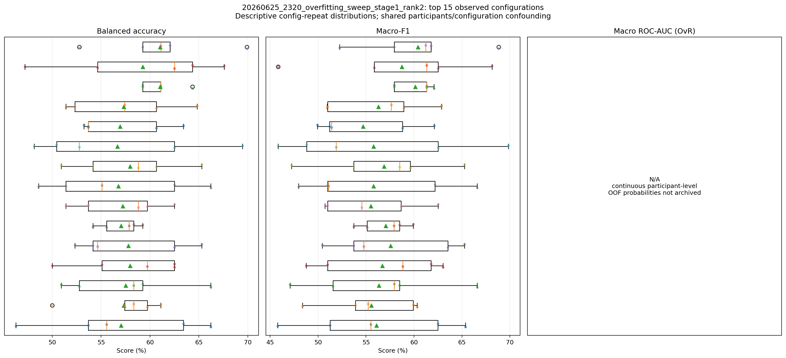
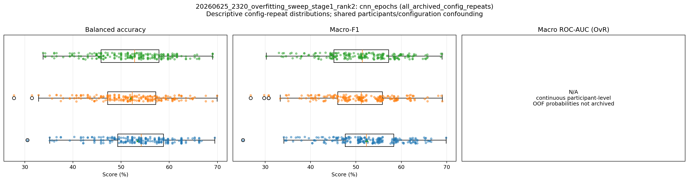
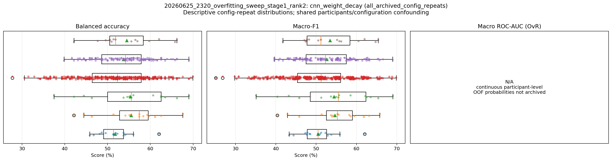
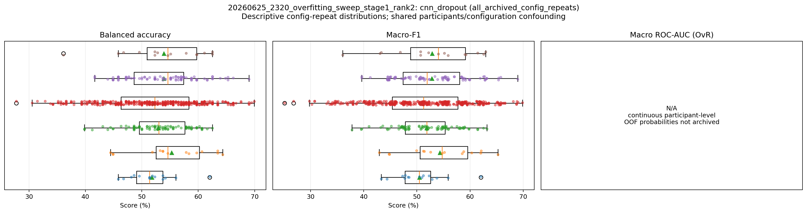
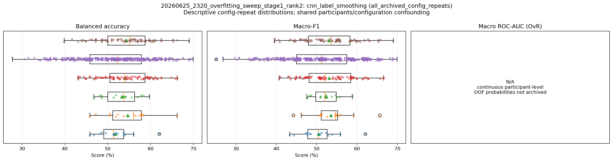
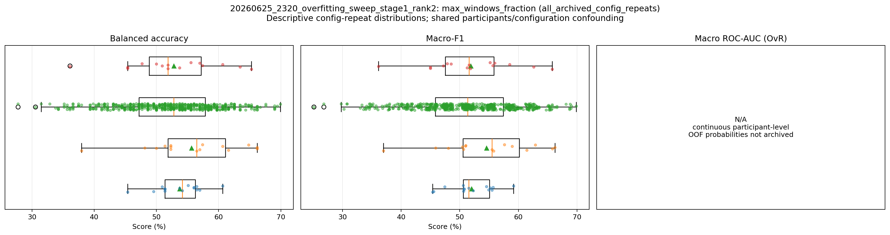
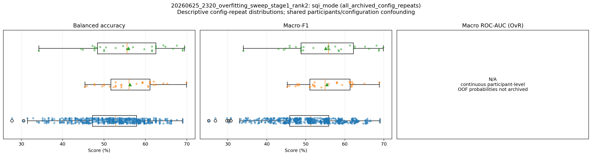
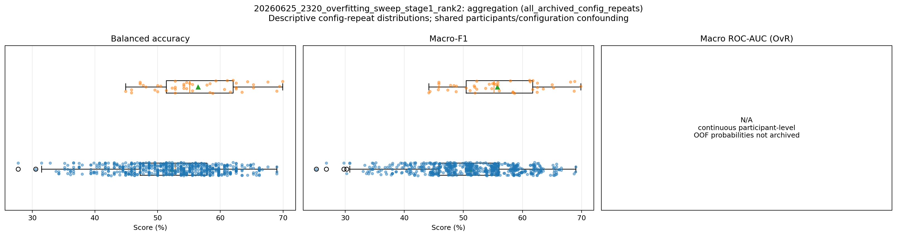
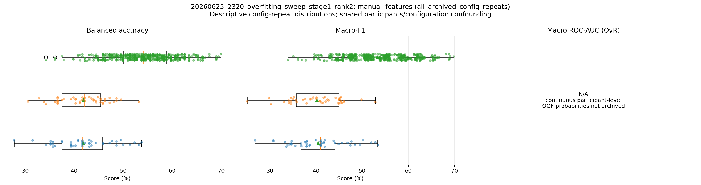
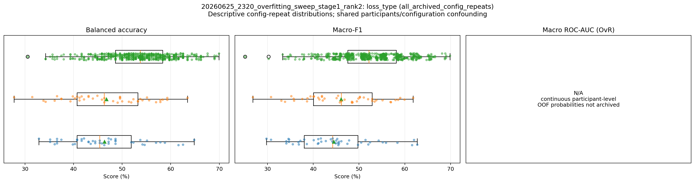
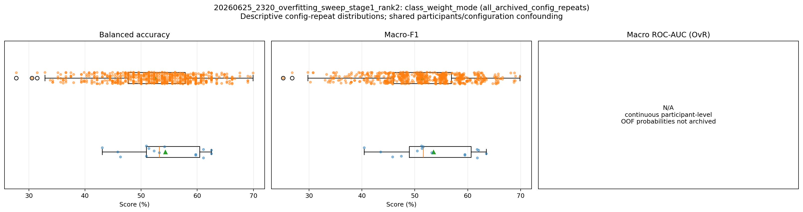
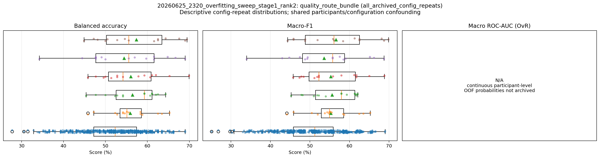
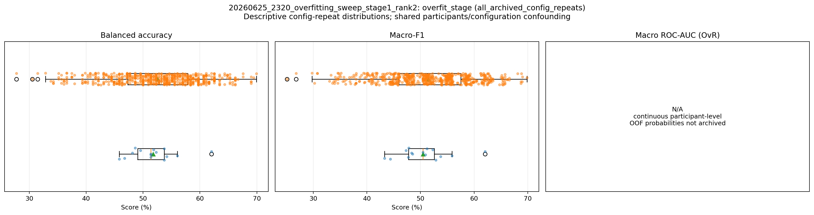
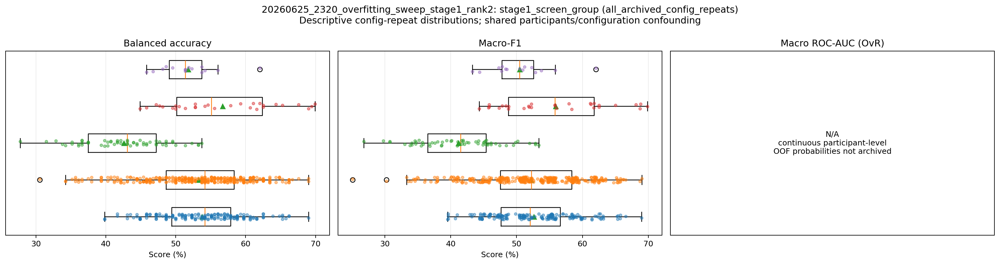
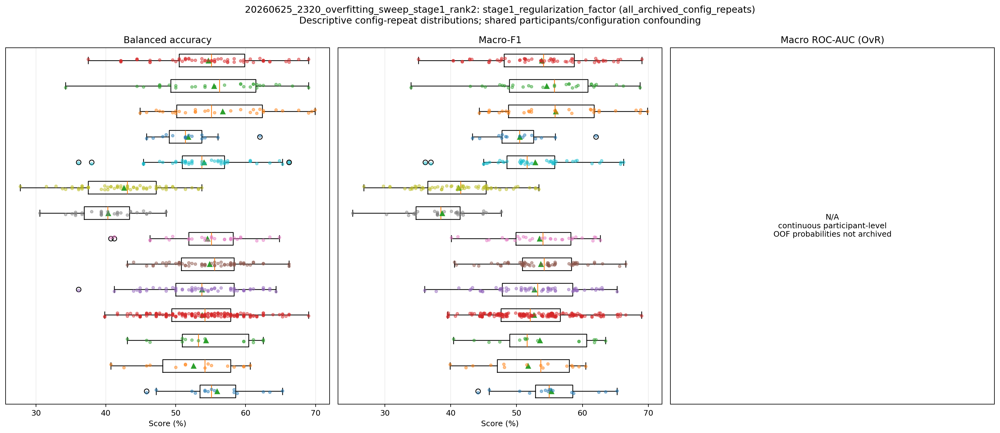
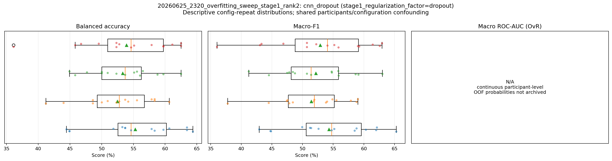
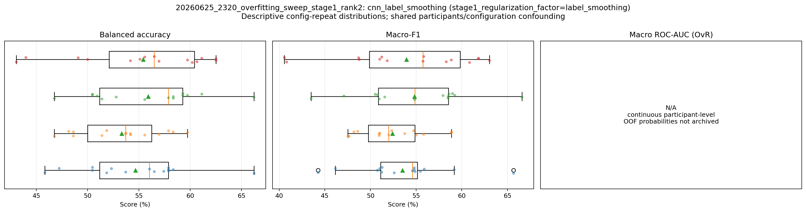
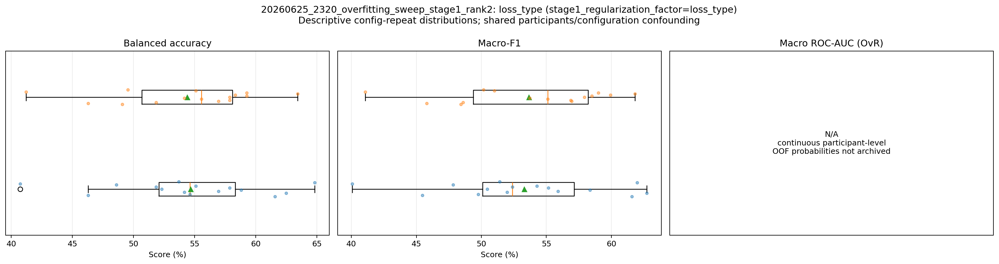
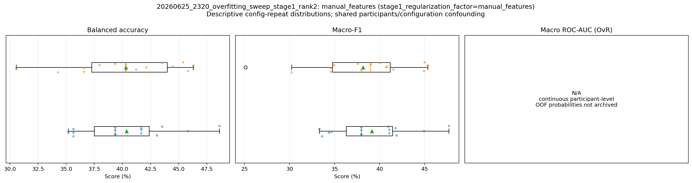
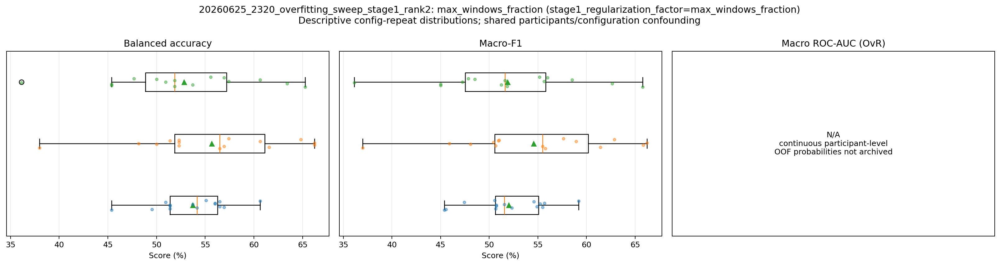
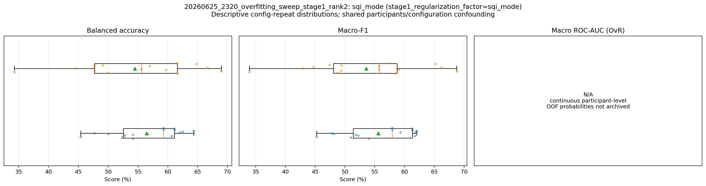
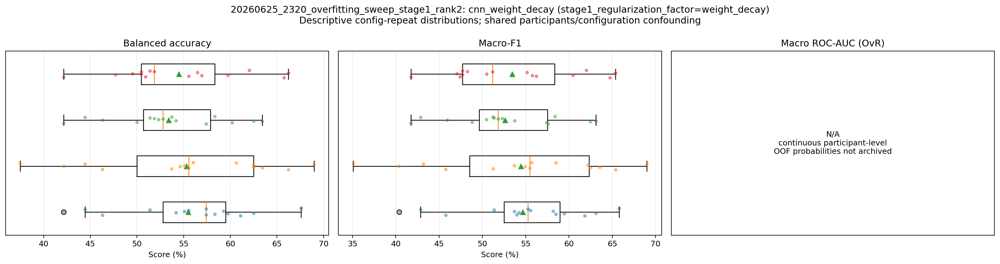